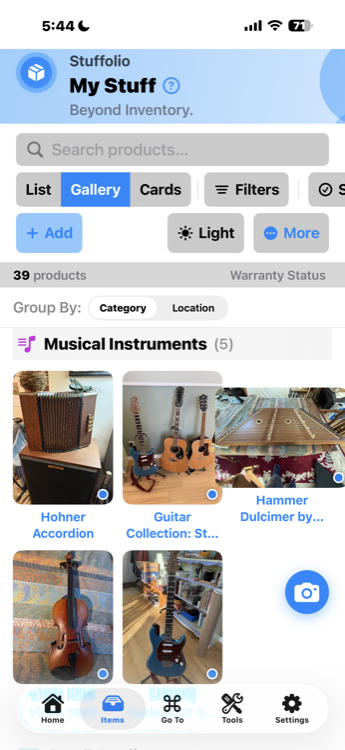
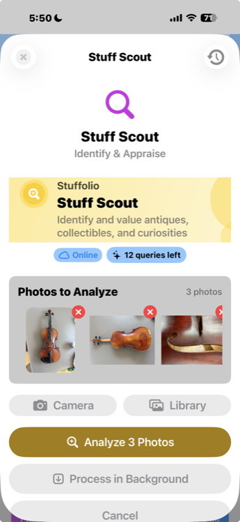
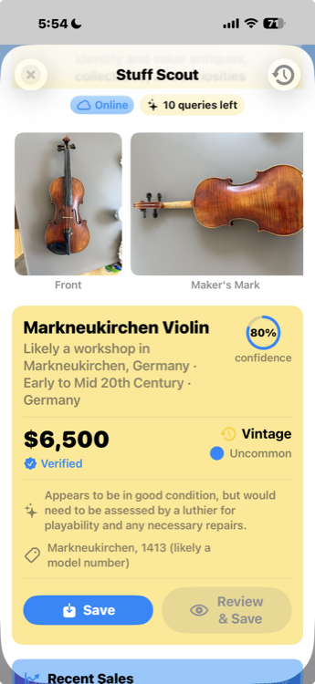
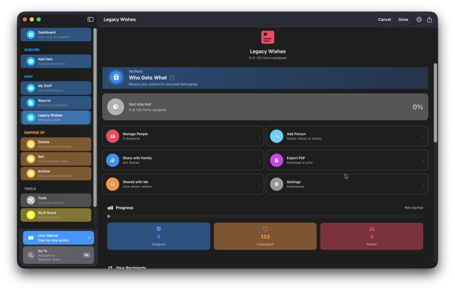

What Stuffolio Does
Every home inventory app tracks what you own. Here's what Stuffolio does that nobody else does — and yes, all the basics are covered too.
The basics: Photos. Receipts. Serial numbers. Manuals. Categories. Rooms. Barcodes. Search. Export. iCloud sync. Family Sharing. All included.
What makes Stuffolio different: Warranty intelligence. Legacy wishes. AI identification. Repair-or-replace guidance. Product memory. Price tracking. These are the features below.

Meet Stuff Scout
Your AI assistant for everything you own
AI assistance when you ask — silent when you don’t.
Stuffolio’s AI is user-initiated and non-ambient. Nothing is analyzed or sent to external services unless you explicitly ask for help.
Stuff Scout is Stuffolio’s built-in AI that actually understands stuff. Point your camera at grandma’s antique vase, a thrift store mystery, or that weird tool in the garage — Stuff Scout identifies it, researches its history, estimates its value, and finds the manual you lost years ago.
It’s like having a knowledgeable friend who’s seen everything, remembers everything, and never judges you for not knowing what a "dovetail jig" is.


Dashboard at a Glance
Needs Attention Card New
See what needs action at a glance: expiring warranties, overdue maintenance, past-due loans, and flagged items. Each row is tappable and navigates to the relevant filtered view. "All caught up!" appears when nothing needs attention.
Quick Actions Row New
Circular action buttons for your most common tasks: Scan barcodes, Add items manually, use AI Scout to identify products, or open Stuff Scout for full AI analysis. One tap to start.
Explore Section New
Feature shortcuts in a grid layout: Insights, Reports, Categories, Locations, Legacy Wishes, Recalls, Loans, and Backup. Discover powerful features without digging through menus.
Dashboard Header Bar New
Integrated search and customize button right in the header. Search your inventory without leaving the Dashboard. Customize which stat cards you see.
Actionable Tips New
Contextual tips based on your usage patterns: "Add photos to items for insurance documentation" or "Rate items to track satisfaction." Dismissible and helpful.
View All Items New
Always-visible navigation to your full inventory. The Dashboard focuses on what needs attention — tap "View All Items" when you want to browse everything.
Maintenance Suggestions (Mac) New
Proactive maintenance cards show items that may need attention based on age, category, and usage. Links to set up reminders or view maintenance history.
Rating Insights (Mac) New
At-a-glance summary of your ratings: how many items rated, average satisfaction, and "would buy again" percentage. Tap to explore full rating analytics.
Help Tooltips New
Each Dashboard section has a (?) button explaining what it does. New to Stuffolio? Tap the help button for context without leaving the screen.
Philosophy: The Dashboard isn't just a landing page — it's your actionable home base. Instead of showing a list of recent items (that's what the Items tab is for), it surfaces what needs your attention and gives you quick paths to action.
Know What You Own
Find anything instantly
Search by name, category, location, or just a few letters. Spotlight integration means you can search from anywhere on your device.
Know where things are
Track locations — garage, attic, storage unit, "lent to Dave." When you need something, you'll know where to look.
Track values over time
What you paid, what it's worth now, depreciation estimates. Useful for insurance, selling, and making informed decisions.
Capture with photos
A picture is worth a thousand data entry fields. Start with a photo, add details when you have time — or never. Your choice.
Let AI identify it
Point Stuff Scout at grandma's vase, a thrift store find, or "what IS this thing?" Get identification, history, and value estimates.
Remember the story
Notes field for context: "Wedding gift from Uncle Bob" or "Got this at the flea market in Austin, 2019." The stories matter too.
Vehicle tracking with VIN
Store VIN numbers alongside serial numbers. Track vehicle-specific maintenance, warranties, and service history all in one place.
Two-tier condition tracking
Not just "used" — track sub-conditions like Excellent, Good, Fair, or Damaged. Better information for resale and insurance.
Multi-category organization New
Items can belong to multiple categories (up to 5). A vintage lamp can be both "Antique/Collectable" and "Home & Furniture." New categories include Kitchen & Dining, Personal Care, and Antique/Collectable.
Go To command (⌘K) Enhanced
Press ⌘K anywhere to jump to any product, feature, or setting instantly. Now opens features like Value Calculator, Settings, and Depreciation directly — no extra taps to find what you searched for.
Value Snapshots New
Track how your inventory value changes over time. Automatic snapshots capture total value history so you can see trends, spot depreciation, and monitor your belongings' worth.
Depreciation Calculator New
Estimate current value based on age and condition. Choose category-appropriate depreciation methods (straight-line, declining balance) or enter custom rates for accurate valuations.
Filter Presets New
Save your favorite search filters as presets. One tap to see "Electronics expiring this month" or "Items in the garage" — no rebuilding filters every time.
Audit Mode New
Verify your physical inventory matches your records. Walk through your home marking items as "Found" to identify what's missing, moved, or needs updating.
Duplicate Finder New
Accidentally added the same item twice? The Duplicate Finder identifies potential duplicates by matching names, serial numbers, and other fields — then lets you merge or delete.
Data Cleanup New
Find and fix incomplete records. Data Cleanup scans your inventory for missing photos, prices, categories, manufacturers, serial numbers, and oversized images — then guides you through fixing each issue category by category.
Batch Categorize New
Auto-categorize uncategorized items using smart keyword matching. Review AI suggestions, manually override any category, then apply to all selected items with one tap. Turn a messy inventory into organized categories in seconds.
Bulk Price Update New
Update current values for multiple items at once. Set a specific value, calculate as percentage of purchase price, apply category-based depreciation, or clear values. Filter by category, room, or items missing values — preview all changes before applying.
Acquisition Type Tracking New
Record how you got each item: Purchased New, Purchased Used, Inherited, Gifted, Found/Salvaged. The form adapts dynamically — gifts hide the price field, inherited items show provenance options, and labels change to match.
Cost Basis Tracking New
Track more than just the sticker price. Add shipping, taxes, accessories, and modifications to see your total investment. "Great find" detection highlights items acquired well below market value.
Price Watch
Track replacement costs New
Monitor current market prices for any item. Know instantly what it would cost to replace your belongings — essential for insurance documentation and budgeting.
Price history charts New
Visual timeline showing how prices change over time. See trends, seasonal variations, and identify the best time to buy replacements.
Price drop alerts New
Set target prices and get notified when items drop below your threshold. Never miss a deal on something you're planning to replace.
Multiple retailer tracking New
Prices from Amazon, Walmart, Best Buy, Target, and more. Compare across retailers with links to each store's current listing.
Stuff Scout integration New
When you use Stuff Scout to value an item, optionally update Price Watch with marketplace prices from eBay, Etsy, and other sources.
Barcode scanner prices New
Scan any barcode to get current retail prices. UPC lookup now returns pricing from major retailers — enable Price Watch directly from the scanner.
AI price lookup AI
Use the AI Assistant's "Current Price" query to search major retailers for current pricing. Results can be applied directly to Price Watch with one tap.
Export price history New
Price Watch data included in CSV and Excel exports. Document replacement costs for insurance claims, tax purposes, or personal records.
Why it matters: That mixer you paid $350 for? It might cost $550 to replace today. Insurance companies want current replacement cost, not what you paid years ago. Price Watch tracks how rising prices affect your belongings — so you're never under-insured or surprised when it's time to replace something.
Quick Start — Fast Data Entry
Simple Add Item Updated
Three clear options: Photo (AI identifies your item automatically), Barcode (scan UPC for instant lookup), or Manual (enter details yourself). No confusing choices — just pick and go.
Optimistic AI Loading New
Take a photo and the form appears instantly. AI analyzes in the background while you can start editing. Fields fill in automatically as results arrive — no waiting!
Scan barcodes
Point your camera at any UPC barcode. Stuffolio looks up product name, brand, and price automatically from global databases.
Scan receipts
Take a photo of your receipt. OCR extracts store name, purchase date, and price — fields fill in automatically.
Receipt Pairing Enhanced
Use Stuff Scout to identify a product, then tap "Add Receipt Photo" to pair a receipt. Store, date, and price auto-fill from the receipt — complete records in seconds.
Auto-fill from Receipt New
Already have receipt images attached? Tap "Auto-fill from Receipt" to extract purchase details from existing receipt photos without re-scanning.
Scan product labels
Photograph the nameplate or label. Extract brand, model number, and serial number without typing.
Take or choose photos
Capture directly with your camera or choose from your photo library. Photo quality analysis helps you get the best results.
Paste for OCR
Paste an image from your clipboard (Mac) and extract text automatically. Great for screenshots and copied images.
Drag & drop (iPad)
Drag images from other apps directly into Stuffolio. Split-screen multitasking makes adding photos effortless.
Batch entry New
Adding 10 identical items? Enter the details once, set the quantity. No repetitive data entry — perfect for collections or bulk purchases.
Voice Input New
Tap the mic button next to Product Name and speak naturally: "Add coffee maker to kitchen, manufacturer Cuisinart, price 99 dollars." Voice commands parse title, room, brand, price, model, and serial — hands-free entry in both Add and Edit forms.
Photo Optimizer New
Automatically optimize photos for storage without losing quality. Resize, compress, and format images to save space while keeping them clear enough for identification and claims.
Photo quality matters: Stuffolio analyzes your photos for blur, text visibility, and resolution before OCR. You'll see "Good match", "May work", or "Poor match" indicators so you know when to retake.
Photo Quick Add: "Snap & Done"
Four photo types supported
Product shot, nameplate/label, receipt, or packaging — each type tells AI what to extract and how to analyze it.
AI identifies & auto-fills
AI analyzes your photo and fills in product name, manufacturer, model number, purchase details — whatever the photo reveals.
Review before saving
Quick preview shows what AI found. Edit any field, add more photos, then tap Save. One flow from camera to inventory.
Fastest way to add items
No typing required. Snap a photo of your new purchase, let AI handle the details, review, save. Done in seconds.
Example: Bought a new blender? Snap the product, nameplate, and receipt. AI extracts brand (KitchenAid), model (KSB1575), serial number, purchase date, store name, and price. You just review and tap Save.
AI-assisted Intelligence
Visual identification
Point your camera at anything. Stuff Scout uses image recognition to identify products, antiques, collectibles, tools, and mystery items you can't quite name.
Scan Depth options New
Choose your analysis level: Quick ID (~15 sec) for fast identification, With Pricing (~25 sec) adds marketplace verification and value estimates, or Full Appraisal (~40 sec) for complete analysis with historical context, provenance research, and detailed condition assessment.
Background processing New
Start a Stuff Scout analysis and switch apps — processing continues in the background using iOS Background Tasks. Query status shows Waiting, Analyzing, or Done. Get a push notification when results are ready, then tap to view. Perfect for Full Appraisal scans that take longer.
Auto-cached recent scans New
Every Stuff Scout analysis is automatically saved to Recent Scans — no more losing results when you navigate away. Your last 25 scans are always available with full identification results, value estimates, and all photos. Oldest scans auto-expire to save space.
Scout Bookmarks New
Swipe right on any recent scan to bookmark permanently. Bookmarks never expire and include full image data, identification, valuation, historical context, and collector notes. Search bookmarks by name, maker, or era. Perfect for items you want to research further before adding to inventory.
View Scout Results from Items New
Items added via Stuff Scout retain a link to the original analysis. Open any Scout-identified item and tap "View Scout Results" to see the full identification, valuation, historical context, and collector notes — no re-scanning needed.
Scout History New
Two-tab view organizing your Scout results: Recent (auto-cached last 25) and Bookmarks (permanent saves). Search across both tabs. Clear all recent scans with one tap while preserving bookmarks. Each entry shows thumbnail, identification, value range, and date.
Scout Refinement Improved
Re-analyze existing items from the Edit view. Scout now uses your form data (manufacturer, model, notes) as context for smarter analysis. Radio button selection for each field: Keep current value, Use Scout's finding, or Enter custom value. Confirmation shows exactly what changed.
Clickable Source Links New
Value estimates include Recent Sales data with clickable links to eBay, Etsy, and other marketplaces. Verify Scout's sources and explore comparable sales yourself.
History & provenance
That vintage piece? Stuff Scout researches its era, manufacturer, and cultural context. Learn the story behind what you own — especially for inherited items.
Value estimation
Get fair market value estimates based on condition, age, and recent comparable sales. Know what things are worth before you insure, sell, or donate.
Manual finder
Lost the manual? AI searches manufacturer sites, archive databases, and user communities to locate product manuals, spec sheets, and setup guides.
Parts & repair lookup
Need a replacement part? AI identifies compatible parts, suggests where to buy them, and finds DIY repair videos for common fixes.
Recall checker
Check your items against CPSC recall databases. See hazard types, affected units, and remedy instructions. Know if your stuff has safety issues.
Keep, Donate, Sell Advisor
Should you sell it or donate it? AI calculates tax deduction value vs. likely sale price and tells you which option puts more money in your pocket.
Smart categorization Enhanced
Add an item and AI suggests categories — now with multi-category support. Assign up to 5 categories per item (e.g., a blender can be both "Kitchen & Dining" and "Electronics"). Items appear in all applicable groups.
AI Response Caching New
AI Product Assistant responses are automatically cached for 30 days. Access previous answers offline — no internet required for repeat queries. Cache statistics track hit rates for performance insights.
Privacy note: AI assistance is user-initiated and non-ambient. Nothing is analyzed or sent to external services unless you explicitly ask for help. We don't store your photos or build profiles. Use AI when it's helpful — it's silent when you don't.
Protect Your Purchases
Track warranty phases
Not just "expires 2027." Know when Full Coverage becomes Parts Only, when Labor ends, when you're down to Limited. Real protection awareness.
Component-based warranties New
Some products have different warranty periods per component. Track 3 years on batteries, 5 years on tools — EGO Power+, DeWalt, and similar brands finally make sense.
Get alerts before changes
Notification before your coverage downgrades — so you can get that repair done while it's still fully covered.
Store proof of purchase
Photos of receipts, order confirmations, invoice PDFs. When you need to make a claim, everything's already documented.
Log support interactions
Rep names, case numbers, what they said, follow-up dates. Never start from scratch on your third call to customer service.
Document for insurance
If disaster strikes, you'll have photos, values, and purchase info ready. Export reports for claims — even with incomplete data.
Track deductibles
Know your out-of-pocket costs per warranty tier. Factor that into repair vs. replace decisions.
AppleCare+ tracking Enhanced
Special support for Apple products. Track incidents used, service fees, and coverage dates. Visual badge shows AppleCare+ status at a glance. Edit AppleCare+ details directly from the Dashboard — if you have one Apple product, it opens the editor right away.
Coverage Insights Enhanced
Set up your insurance profile with coverage limits and insured values per item. See which items exceed per-item limits, get alerts when replacement costs go stale, and identify coverage gaps before you need to file a claim.
RMA & Return tracking New
Log return authorizations, track shipping labels, and monitor claim status. Know exactly where your warranty claim stands — Pending, Approved, Shipped, In Progress, or Completed.
Apple Wallet Warranty Cards New
Add warranty cards to Apple Wallet for quick access. Show proof of coverage at the repair shop without digging through the app — your warranty is right in your wallet.
Claim Prep Kit New
Preparing an insurance or warranty claim? The Claim Prep Kit gathers photos, receipts, purchase dates, serial numbers, and coverage details into one ready-to-submit package.
The "aha" moment: That 3-year warranty on your fridge? Year 1 might be full coverage. Years 2-3 might be parts only. Your EGO lawn tools? 3 years on batteries, 5 years on equipment. Most apps just show "expires 2027." Stuffolio shows you when your coverage actually changes — and tracks different coverage for different components.
Remember What Works
Rate your stuff (1-5 stars)
How satisfied are you with this product? Quick rating that's meaningful months or years later when you need to replace it.
Track "Would Buy Again"
Simple yes or no. The most practical question: if this broke tomorrow, would you buy the same thing? Your future self will thank you.
Add rating notes
Why the 2 stars? "Motor died after 6 months." Why the 5 stars? "Still going strong after 8 years." Context that matters.
Filter by satisfaction
Show me all my 5-star items. Show me things I wouldn't buy again. Find patterns in what works for you.
This isn't social media. Stuffolio ratings aren't reviews for others to read. They're decision memory for you — helping answer "Should I buy this brand again?" when you're standing in the store three years from now, trying to remember if that vacuum was any good.
Repair, Keep, or Replace?
Repair options first Enhanced
We show repair possibilities before replacement suggestions. Links to iFixit guides, repairability scores, DIY difficulty ratings, and parts lookup help you extend product life.
Your brand history Enhanced
See your track record with this brand — average ratings, would-buy-again rates, and how other items from the same manufacturer have performed for you. Recommendations now factor in your real purchase history, warranty status, and condition data.
Lifespan analysis
How much life is left? Age vs. expected lifespan, warranty status, and depreciated value help you understand where you are in the product lifecycle.
Confidence levels Enhanced
High, Medium, or Exploratory — each recommendation shows how confident the advice is, based on weighted scoring of your real item data. More data means better advice.
Research tips
Learn to find credible product reviews yourself. Red flags to watch for, trusted sources, and a simple research strategy — because your own judgment matters most.
Three clear paths
Repair It, Keep Using, or Time to Replace — clear action buttons with context-aware guidance. No pressure, just informed options.
Philosophy: This isn't "AI says buy this." Your own ratings, brand history, and experience are the most trustworthy data you have. We surface that first, then offer tools to help you think — not shop. If you only have one damaged item, the advisor opens directly — no extra steps.
Maintain Your Stuff
Smart maintenance reminders
Category-aware suggestions: oil changes for vehicles, filter replacements for HVAC, data backups for electronics. Stuffolio knows what your stuff needs.
Multiple tasks per item
Refrigerator? Track water filter (6 months), coil cleaning (12 months), and door seal check (24 months) — all on their own schedules.
Priority-based alerts
Overdue items surface first. "Due soon" items get attention. Upcoming tasks stay visible but don't nag. The right urgency at the right time.
AI-suggested intervals
Tap "AI Suggest" to get smart interval recommendations based on product category and task type. Uses 1 query — you choose whether to accept.
Track service history
Log maintenance you've done: date, cost, notes. Know when you last changed the oil, replaced the battery, or cleaned the filter.
Find manuals and parts
AI-assisted lookup for user manuals, replacement parts, and DIY repair videos. Don't waste hours searching — let Stuffolio find it.
Example: Add your car → Stuffolio suggests oil changes every 90 days, tire rotation every 180 days. Add your HVAC system → monthly filter reminders. Each task tracks independently with its own schedule and history.
Help Improve AI Quality
Thumb up = helpful
When AI gives you a useful answer — manual found, part identified, value estimate accurate — tap thumbs up.
Thumb down = not helpful
When AI misses the mark — wrong product, irrelevant results, confusing answer — tap thumbs down.
Improves future results
Your feedback helps train the AI. Over time, responses get more accurate for everyone — including you.
Always optional
Don't want to rate? Just skip it. Rating is helpful but never required.
Privacy note: Ratings are anonymous and aggregated. We don't tie ratings to your inventory or build profiles. It's simple feedback: "this helped" or "this didn't."
Share With Family
Household Sharing
Create a household and invite family members. Share appliances, vehicles, and electronics — everyone sees the same items with real-time sync.
Real-time sync
Changes sync instantly across all devices. Add an item on your phone, see it on your spouse's iPad within seconds.
Owner attribution
See who added each item and who last modified it. Know that "Kitchen Mixer" was added by Mom on her iPhone.
Permission levels
Viewer, Editor, or Admin — you decide. Share the info without giving control, or collaborate fully. Change permissions anytime.
Works offline
Edit shared items without internet. Changes queue up and sync automatically when you're back online.
Private by default
Nothing is shared unless you explicitly share it. Your inventory is yours. Only items you mark as shared are visible to others.
Real example: You and your spouse both drive the family car. Share it so you both can track maintenance, log repairs, and see warranty info — without duplicating the item in two separate inventories. See who last updated the mileage and when.
Track Loans & Borrowed Items
Track items you lent
Lent your drill to a neighbor? Record who has it, when you lent it, and when you expect it back. No more "where did that go?"
Track items you borrowed
Borrowed something that's not in your inventory? Track it separately so you remember to return it — and to whom.
Return reminders
Get notified when a borrowed item is due back. Overdue items surface in your dashboard so nothing slips through the cracks.
Loan history
See the full history: when lent, when returned, any notes. Useful when someone asks to borrow something again.
Plan Ahead

Record who gets what
Grandma's ring goes to Sarah. The vintage guitar goes to your nephew. The photo albums stay with the eldest. Document your intentions clearly.
Contingency recipients New
Set a line of succession. If your primary recipient declines, specify who should receive the item next — ensuring your wishes are honored.
Add stories and context
"This watch was your grandfather's. He wore it every day for 40 years." The meaning behind the object matters as much as the object itself.
Share with family
Share your Legacy Wishes via CloudKit with real-time sync. Family can see your intentions — no surprises, no guessing, no conflict.
Family collaboration New
Let family members indicate their preferences. Conflict detection highlights items where multiple people are interested — helping start conversations.
Export as PDF
Generate a document to print, email, or store with important papers. A simple record of your wishes in a shareable format.
Assign from Edit Item
Assign beneficiaries directly from the Edit Item view without leaving the form. One less step when you're already updating item details.
Works offline New
View shared wishes even when offline. Changes queue automatically and sync when you're back online — no data loss.
Important: Legacy Wishes is not a legal will. It doesn't replace estate planning. It simply answers the smaller, personal questions that wills rarely cover: Who gets the mixing bowl you used every Sunday? The tools you maintained for decades? It's a conversation starter, not a legal document.
Move Things On
Track donations
Record what you donated, when, to whom, and the fair market value. Everything you need for tax documentation in one place.
Get value estimates
AI-assisted fair market value suggestions based on item condition, age, and recent sales. Know what things are actually worth.
Keep, Donate, Sell Advisor
Tax deduction vs. marketplace sale — which comes out ahead for your situation? The Keep, Donate, Sell Advisor does the math.
Keep disposal history
Disposed items move to your archive. You can still reference them for insurance claims, tax records, or just "what happened to that thing?"
Lost & Stolen tracking New
Mark items as lost or stolen with dates, circumstances, and police report numbers. Keep the record for insurance claims and future reference if the item is recovered.
Work Your Way
iPhone, iPad, and Mac
Native apps for all three. Capture on your phone, manage on your Mac. Same data, optimized for each device.
iCloud sync (optional)
Your data in YOUR iCloud — not ours. Sync across devices, or keep it local. You choose.
Smart conflict resolution
Edit on any device. If conflicts happen, you see both versions side-by-side and choose what to keep. No silent overwrites, no lost data.
Spotlight & Handoff
Search your stuff from the iOS home screen. Start on iPhone, continue on Mac. Deep system integration when you want it.
Home Screen widgets Enhanced
Warranty status at a glance. See expiring items, quick add button, and item counts — all without opening the app. Tap any widget to jump directly to the relevant section.
Lock Screen widgets
Compact widgets for your Lock Screen. Warranty countdown, item count, and quick access right where you need it.
Live Activities (iPhone)
When a warranty expires today, it appears in your Dynamic Island and Lock Screen. Transitional alerts that matter.
Keyboard-first
Press ⌘K for the command palette. Navigate anywhere in two keystrokes — features now open directly instead of landing on a general page. Power-user friendly.
Siri Shortcuts Expanded
Voice control your inventory with 10+ actions. "Add item to garage", "What's my inventory worth?", "Show maintenance due", "Get my electronics". Build powerful automations in the Shortcuts app.
Quick Actions (home screen)
Long-press the Stuffolio icon for instant shortcuts: Add Warranty, Expiring Soon, Scan Receipt, and Check Recalls. Jump straight to what you need without opening the app first.
StandBy Mode (iPhone) New
Widgets look great in iOS 17's StandBy mode. Glance at warranty status or item counts from across the room while your phone charges.
Send to Apps New
Quickly send item details to Apple Notes, Calendar, or Reminders. Create warranty expiration events, maintenance reminders, or notes — all with one tap.
Import & Export
Export to Excel
Full inventory export with multiple sheets: items, warranties, maintenance. Ready for spreadsheet analysis or sharing with your insurance agent.
Export to PDF
Formatted reports for printing or archiving. Inventory lists, warranty summaries, legacy wishes — professional documents with one tap.
Export to CSV
Universal format that works everywhere. Import into any spreadsheet, database, or other inventory tool.
Import from CSV
Switching from another app? Import your existing inventory. Field mapping helps match your data to Stuffolio's format.
Backup & restore Updated
Create local backups of your entire inventory with optional password encryption. Encrypted backups use industry-standard AES-GCM and are saved as secure .stuffolio files. Restore anytime — encrypted files prompt for password automatically.
Print support
Print inventory reports directly from your device. Optimized layouts for paper documentation.
Privacy First
Local by default
Data stays on your device unless you enable iCloud sync. Even then, it's YOUR iCloud — we never see your inventory.
All opt-in
Network features, Spotlight, Siri, AI — everything is OFF by default. Enable only what you want. We don't assume.
No ads, no tracking
No advertising. No analytics profiles. No selling your data. You're the customer, not the product.
Face ID / Touch ID lock
Optional biometric app lock. Stuffolio re-locks after 60 seconds in the background. Your inventory stays private even if someone picks up your phone.
Accessibility built-in
VoiceOver support. Dynamic Type. Colorblind-safe design (blue/yellow/red, never color alone). WCAG 2.1 AA compliant.
Ready to Try Stuffolio?
Track what you own. Protect your purchases. Remember what works. Plan ahead.
$9.99 one-time purchase. No subscription required. AI features optional at $2.99/month.
See how Stuffolio compares to other home inventory apps.